Contents
Service Introduction
You can also read the service introduction PDF to learn about the concept, main features, and privacy-friendly design of Kotoba Uke Mimamori.
View the service introduction PDFProtecting Your Peace of Mind
You can learn more about what to consider when a cushion appears, including choosing "Not now" or taking some distance from the words you receive.
How to Protect Your Peace of Mind with Kotoba Uke Mimamori1. Add the extension from the Chrome Web Store
Add the published extension from the Chrome Web Store, enable it from the popup, and confirm that a cushion can appear on X. The screenshots below show the Japanese Chrome interface.
- Open the Kotoba Uke Mimamori Chrome Web Store page.
- Click "Add to Chrome".
- If a warning screen appears, review the message and click "Continue to install".
- On the permission confirmation screen, click "Add extension".
- Confirm that Kotoba Uke Mimamori has been added to Chrome.
- Open the extension menu in the upper-right corner of Chrome and pin Kotoba Uke Mimamori to the toolbar.
- Click the Kotoba Uke Mimamori toolbar icon to open the popup.
- Turn the extension ON when needed, then choose Low, Standard, or High for cushion sensitivity.
- Open X and confirm that a cushion is shown on a matching post.
- Click "Not now" to keep the post blurred while leaving the option to show it later.
- Click "Show content" to remove the blur and view the post text.
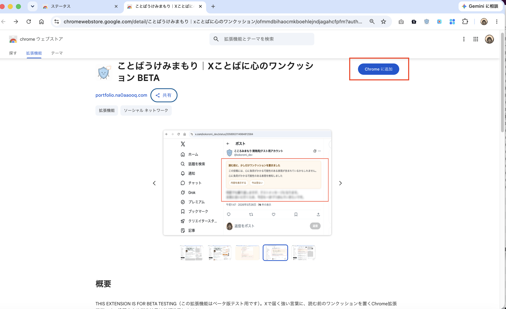
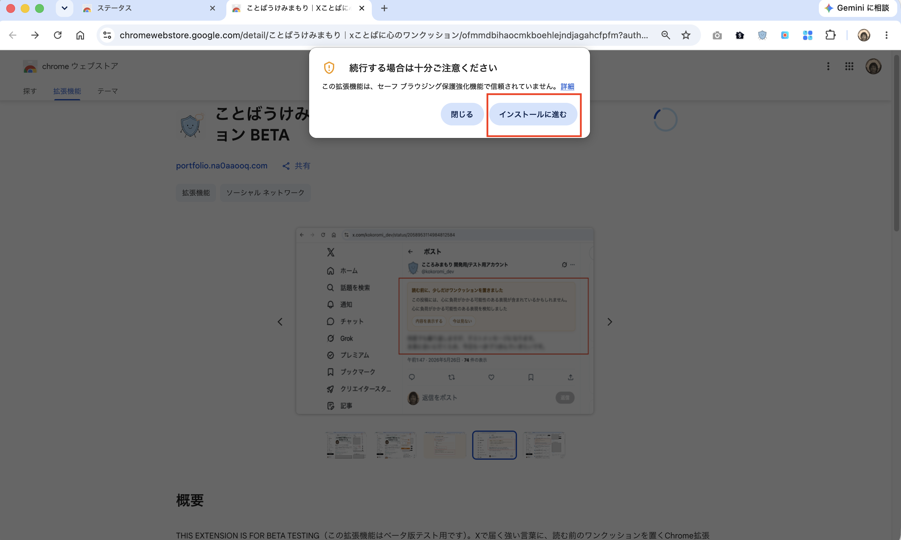
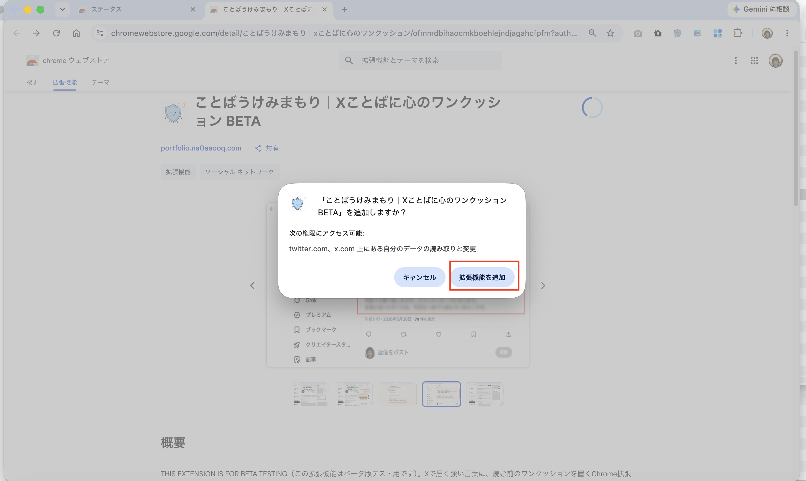
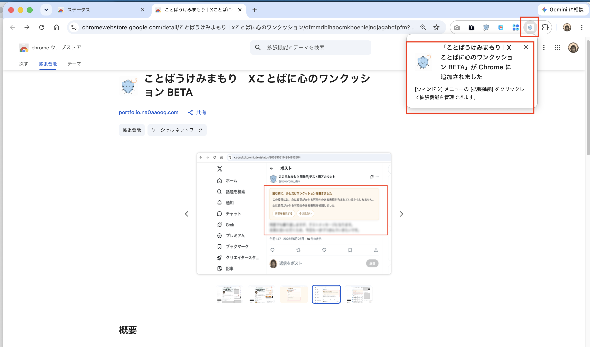
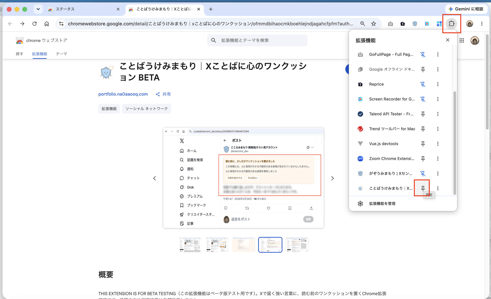
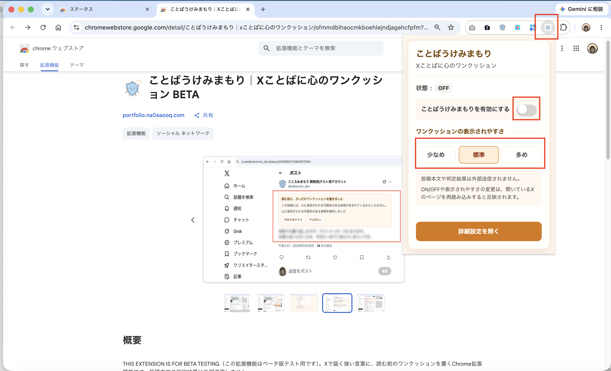
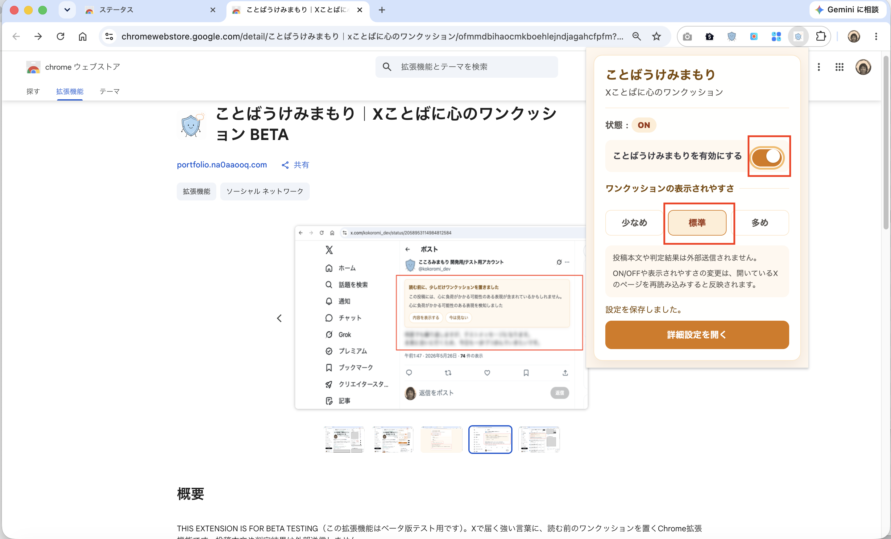
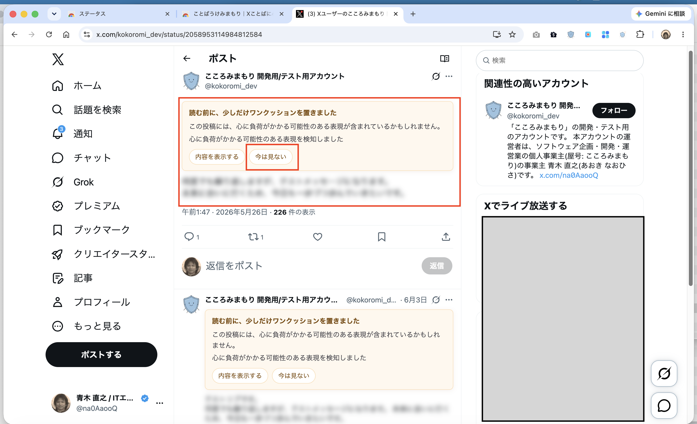
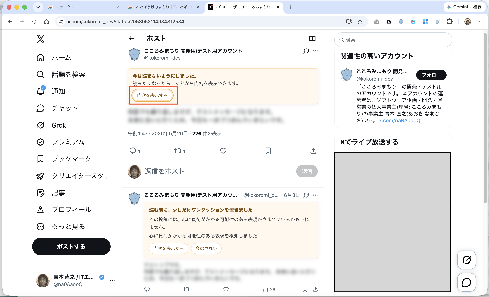
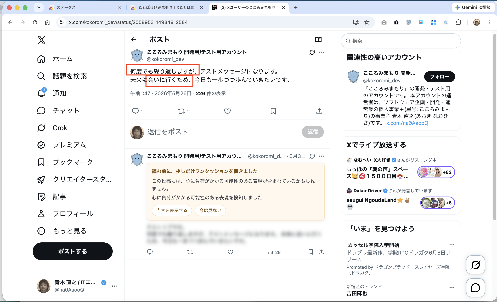
2. Change ON/OFF, display language, and sensitivity in the popup
The popup can change the extension ON/OFF, display language, and cushion sensitivity. The initial state is OFF, and you can turn it ON when you want to use it.
- You can choose Auto, 日本語, or English for the display language. Auto uses Japanese when Chrome's UI language is Japanese and English otherwise. The popup and options page update immediately when you change it.
-
You can choose the cushion display sensitivity from Low, Standard, or High.
- Low: Shows cushions mainly for stronger expressions.
- Standard: The usual setting.
- High: Shows cushions more easily, including for slightly lighter risk expressions.
- Post text and detection results are not sent to external servers.
- ON/OFF and sensitivity changes take effect after reloading the open X page.
- The display language setting is currently shared by the popup and options page only. It does not yet change the language of cushions shown on X.
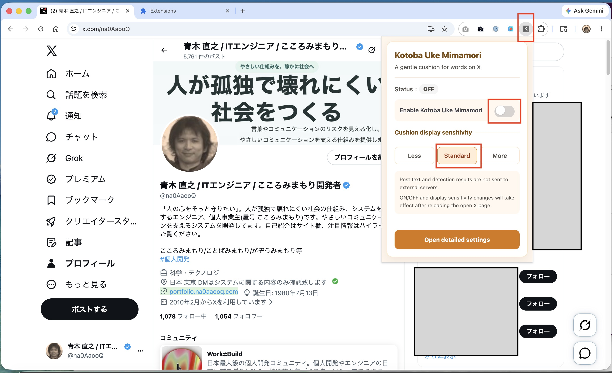
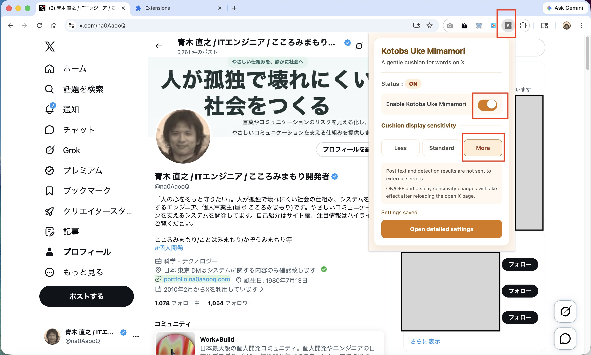
3. When a cushion is shown
When the extension is ON, a gentle cushion may be shown before reading a post that includes wording that could feel emotionally heavy.
The "Expression intensity guide" and "Detected language patterns" are supporting information shown in the cushion, based on fixed rules. You can use them as a reference while deciding for yourself whether to read now or not now.
How to read the guidance
- The Expression intensity guide has three levels: "Somewhat strong," "Strong," and "Very strong."
-
Up to two Detected language patterns are shown to keep the information easy to read.
Detected language patterns
- Language that may relate to personal safety
- Language that may feel pressuring
- The detection result is not based on AI understanding the meaning of the post or judging its risk. It is supporting information based on the fixed detection rules in Kotoba Uke Mimamori, so false positives and missed detections may occur.
- It does not determine that a post is dangerous, determine whether its content is factually accurate, or assess the poster's personality or intent.
- Cushion or guidance display counts alone should not be used to assess a person or account.
Low, Standard, and High sensitivity affect the threshold at which a cushion appears. However, changing the cushion display sensitivity setting in Kotoba Uke Mimamori does not change the meaning of the Expression intensity guide for the same post.
- The post text is blurred.
- "Show content" displays the post text.
- "Not now" keeps the post blurred and lets you show it later.
- A cushion does not change or delete post text on X (Twitter).
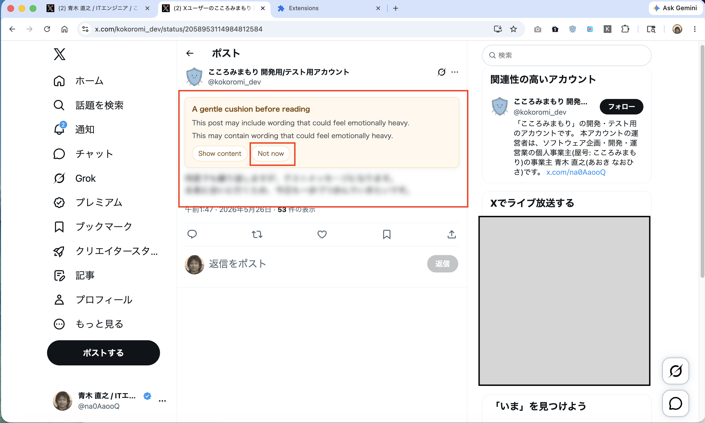
4. After choosing Not now
If you choose "Not now", the post stays blurred for now. You can still choose "Show content" later if you want to read it.
The intensity and pattern guidance is not shown in this state. This keeps the display simple after you have chosen not to read for now, without asking you to decide again.
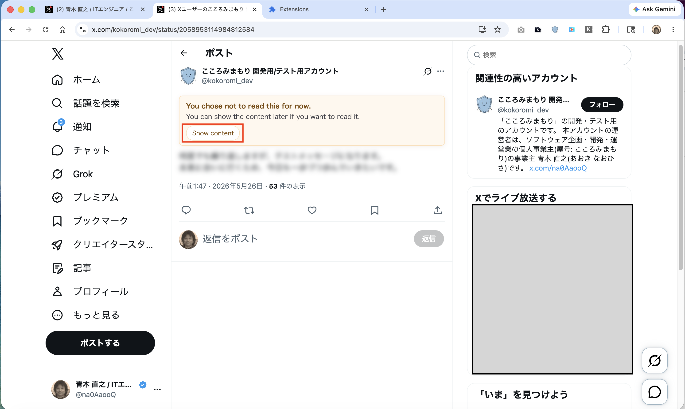
5. After choosing Show content
Choosing "Show content" removes the blur and shows the post text normally.
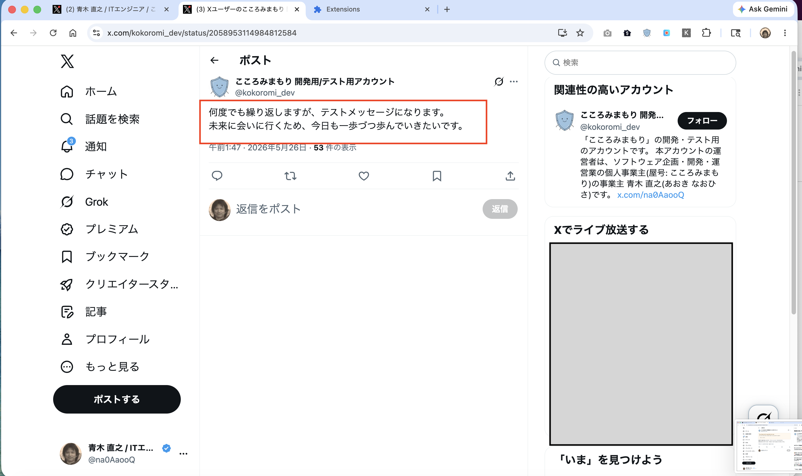
6. If it does not seem to work
- After changing ON/OFF or cushion sensitivity, reload the open X page.
- If you want to stop cushions, turn the extension OFF in the popup or options page and reload X.
- If X was already open when the extension was added or updated, reload the X page.
The current MVP applies setting changes when the X page loads, so a page reload is needed after changing settings.
7. What this tool values
Kotoba Uke Mimamori adds a cushion before reading instead of erasing posts completely. It leaves both the freedom to read and the freedom not to read now with the user.
Post text and detection results are not sent externally. Detection runs
locally in the browser, and the only saved settings are
enabled, cushionSensitivity, and
uiLanguage.
This extension does not replace X's built-in mute features. It is a supplemental tool that adds a gentle pause before reading.
For more details, see the Privacy Policy.